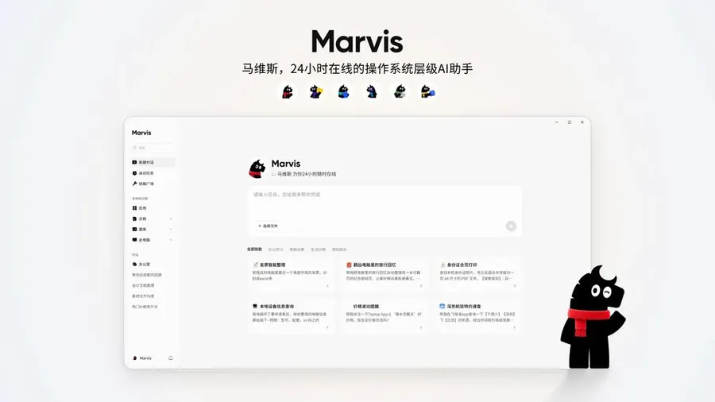

101特别关注 · 001
腾讯 OS 级个人 AI 助手 Marvis 鸿蒙版正式上线：跨端远控、定时任务、文件处理
四维 88Tier 0 · 国内个人助手×1.15≈ 101
腾讯操作系统层个人 AI 助手 Marvis 的 HarmonyOS 版 11 月 16 日在鸿蒙应用市场正式上线，与安卓 / iOS 版功能对齐，支持自然语言操控、跨设备远程控制电脑、定时任务与智能文件处理。鸿蒙版还新增微信与 QQ 登录，历史对话与积分资产可继承。腾讯应用宝官方页显示该应用由腾讯科技（深圳）有限公司运营、11 月 16 日更新，GMT EIGHT 快讯同步报道上线消息。
💡 点评这是四家基准线里腾讯一侧久违的实质节点：不是新模型发布，而是把「能替你办事」的个人助手铺到鸿蒙这一新平台，且跨端远控与定时任务都是可核验的办事能力。午报同节报的是华为小艺会员，此处为不同产品的当日新进展。
腾讯应用宝 / GMT EIGHT · 原文 →